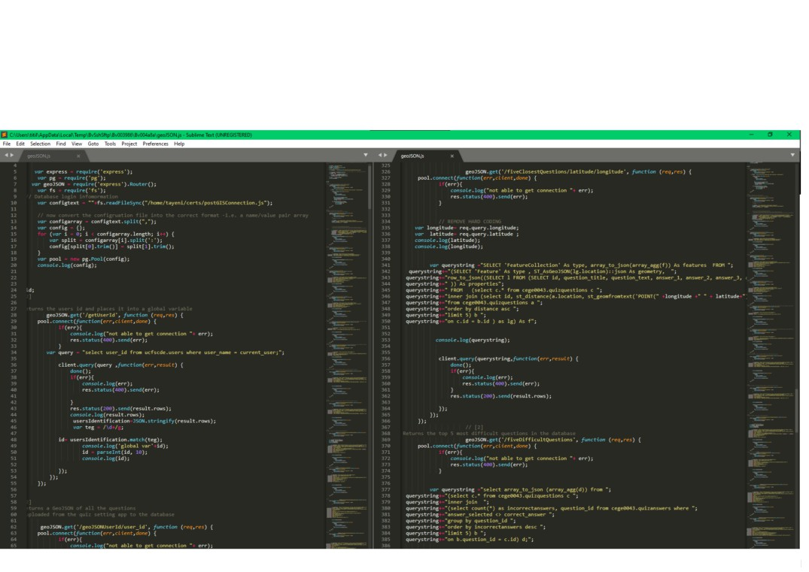
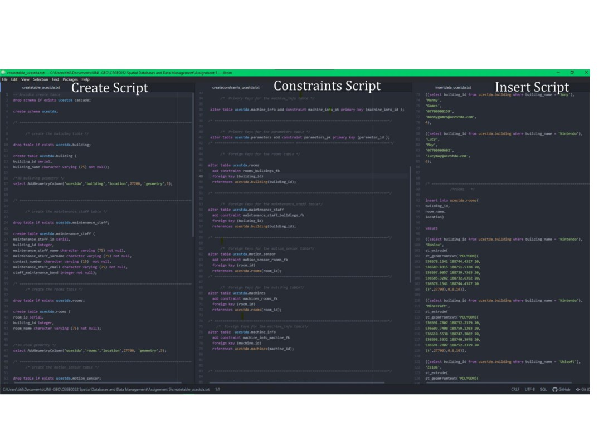
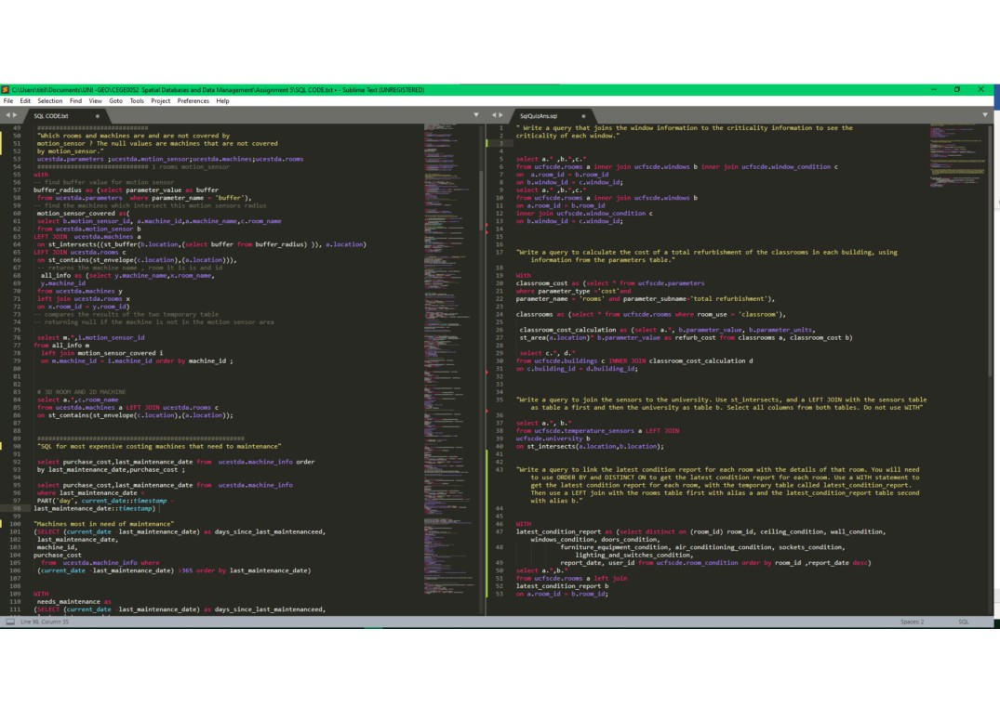
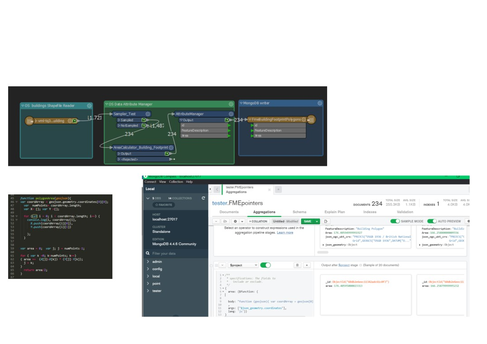

SQL and NoSQL Script Snippets
I have chosen to create the document of screenshots to demonstrate scripted examples instead of uploading it to a
public repository because some scripts:
• are part of my final MSc project
• have been marked but as part of a module assessment, but I want to avoid plagiarism from students who are yet
to complete the assessment in my cohort.
• may form part of a repeated syllabus to avoid plagiarism.
If required, I can send the complete code or create a private online repository for viewing.
Contents
SQL and JavaScript: Developing API to support a Mobile and Web Geospatial Application
2
SQL: Asset Management Database
3
SQL Queries
4
FME, NoSQL and JavaScript: Creating Spatial Operators (Area) in MongoDB
5

SQL and JavaScript: Developing API to support a Mobile and Web Geospatial Application
Developed a Restful API using node.js using the HTTP methods GET and POST to input data and retrieve data from a
PostGIS database (Figure 1). To support a location-based web application that displayed the data using the JavaScript
library, Leaflet.
Figure 1 Code snippet displaying the retrieval of data as GeoJSONs. The data was retrieved from a PostGIS database.

SQL: Asset Management Database
Primary and Foreign Keys | 2D and 3D Geometries | Constraints
Figure 2 Demonstration of creating a schema and inserting data.

SQL Queries
Nested Queries| Common Table Expressions | Joins | Spatial Joins
Figure 3 The left script queries the schema in Figure 2, and the right script is part of a Spatial Databases module quiz.

FME, NoSQL and JavaScript: Creating Spatial Operators (Polygon Area) in MongoDB
This page demonstrates how to use JavaScript to create a spatial operator in MongoDB. First, Ordnance Survey Building
footprint shapefiles downloaded from Digimap are read into FME, an area attribute was added for later data validation
then uploaded to a MongoDB Collection (Figure 5). Finally, the function is tested in a JavaScript IDE (Figure5), then the
aggregation operator is used to test the function in MongoDB(Figure 6), and the solution can be compared to the stored
attribute.
Figure 4 Simple tester FME workbench reading in and Ordnance Survey polygons and writing it into a
MongoDB collection.
Figure 5 Javascript code to
calculate the area of a regular
polygon using coordinates.
Figure 6 Results of querying the area of the building footprints in MongoDB using the Javascript function in a query.
The attribute “Area” is used to validate the solution.